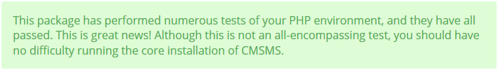
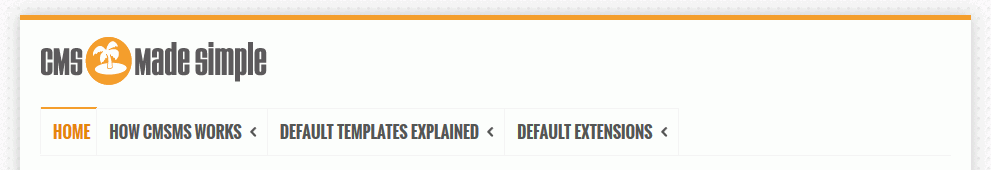
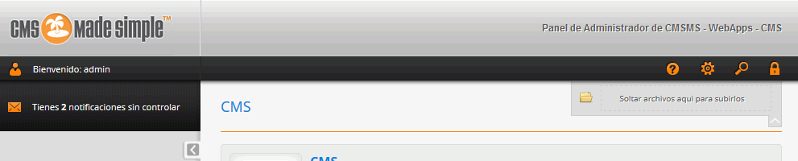
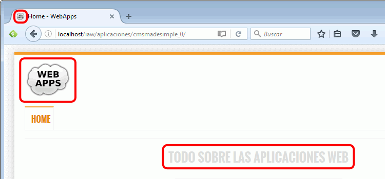
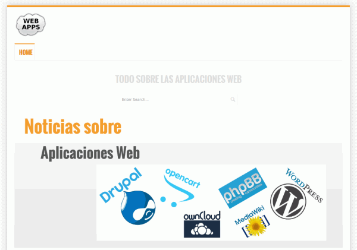
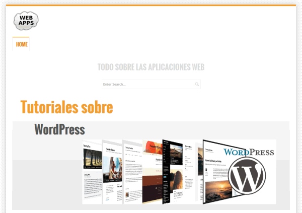
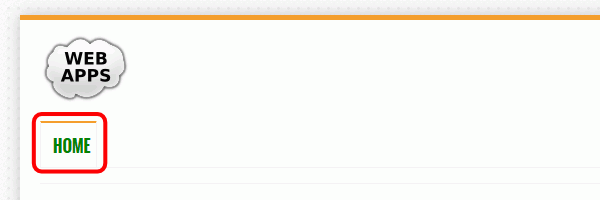

Entre en phpMyAdmin como usuario root y cree un usuario de MySQL con nombre iaw_cmsms_1, contraseña iaw_cmsms_1 y base de datos iaw_cmsms_1.
Abra en el navegador /cmsms e inicie la instalación.
Resuelva las advertencias iniciales y haga una captura de toda la pantalla en la que se vea que se han resuelto las advertencias iniciales:

Instale CMS Made Simple:
Usuario administrador admin y contraseña adminadmin.
Nombre del sitio: WebApps
Idioma: Español
Haga dos capturas de toda la pantalla una vez instalado, del sitio y tras entrar como administrador:


2. Logo y favicon del sitio
Suba los archivos de logotipo () y favicon ( - favicon en formato .ico) a la carpeta simplex (cada imagen en la carpeta adecuada). Haga una captura de la carpeta en la que ha subido una de las imágenes (logo o favicon, una es suficiente).
Modifique el código fuente de la plantilla Simplex para que se utilicen los archivos webapps-logo.png (91 x 73 px) y webapps-favicon.ico. Haga una captura de la pantalla de edición de la plantilla en la que se vea la modificación de la plantilla (del logo o del favicon, una es suficiente).
Modifique el código fuente de la plantilla Simplex para cambiar el lema del sitio a Todo sobre las Aplicaciones Web.
Haga una captura de toda la pantalla mostrando los tres elementos:

3. SlideShow
Suba las imágenes de banners (Banner 1 y Banner 2) a la carpeta simplex (en la subcarpeta adecuada). Haga una captura de la carpeta en la que ha subido las imágenes.
Modifique la plantilla Simplex SlideShow para que se muestren únicamente las dos imágenes con los mensajes ("Noticias sobre" + "Aplicaciones Web" y "Tutoriales sobre" + "WordPress")
Haga dos capturas de toda la pantalla en la que se vean las imágenes:


4. Cambiar el aspecto visual
Cambie el color del enlace Home en la hoja de estilo Simplex Layout. Haga una captura de la pantalla de edición de la hoja de estilo en la que se vea la modificación.
Haga una captura de toda la pantalla mostrando el resultado:

5. Alias
Cree un alias para poder acceder a CMS Made Simple mediante la dirección http://localhost/cmsms.
Escriba un fichero alias.txt con el alias que ha creado.
Haga una captura de toda la pantalla mostrando que funciona el alias.
6. Copia de seguridad
Como usuario iaw_cmsms_1 haga una copia de seguridad de la base de datos.
{kind=link}
{kind=link}